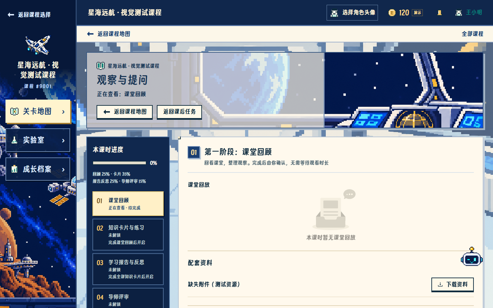
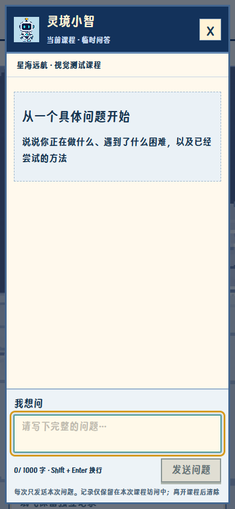
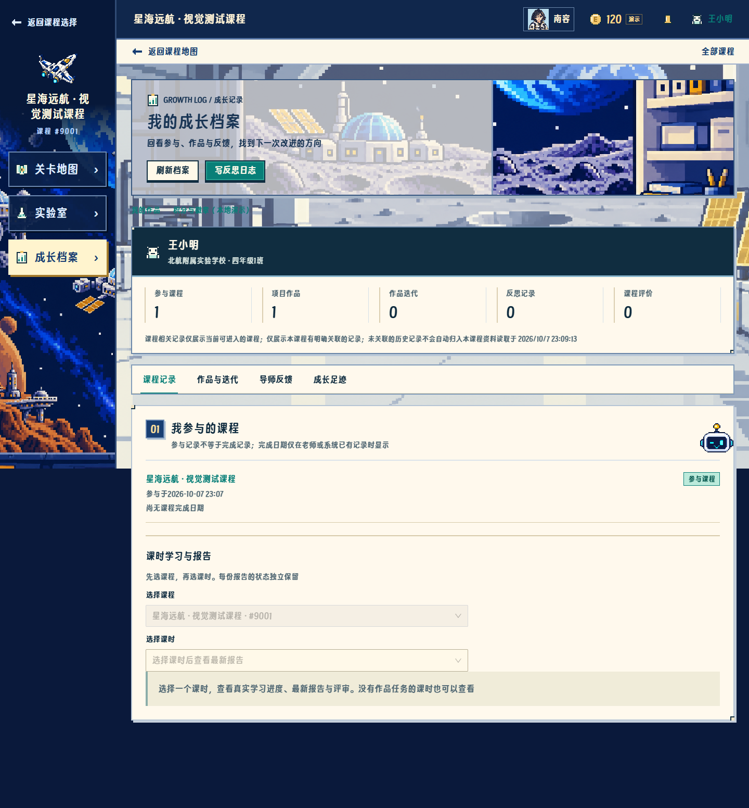

platform.nav.courses第二步 · 可人工修改的文案
修改来源：uiCopy.jsx。也可以直接在此 HTML 编辑文字、关闭可选小字。两份都修改且结果不同时，会列出冲突，第三步不会自动选择一份覆盖。教学条目是测试 API 来源快照和建议改稿，本页不会保存到业务数据库。
真实页面位置预览



修改后点击保存；浏览器下载文件会出现在你的下载目录。
platform.nav.mecourse.nav.mapcourse.nav.labcourse.nav.archivecourse.nav.exitcourse.nav.returnavatar.openavatar.hintavatar.savedavatar.uncertainavatar.reloadassistant.nameassistant.openassistant.closeassistant.boundaryassistant.empty.titleassistant.empty.hintassistant.labelassistant.placeholderassistant.sendassistant.waitingassistant.latestassistant.disabledassistant.reloadassistant.failedassistant.restoresystem.platform.001system.platform.002system.platform.003system.platform.004system.platform.005system.platform.006system.platform.007system.platform.008system.platform.009system.platform.010system.platform.011system.platform.012system.platform.013system.me.001system.me.002system.me.003system.me.004system.me.005system.me.006system.me.007system.me.008system.me.009system.me.010system.me.011system.shell.001system.shell.002system.shell.003system.shell.005system.shell.006system.shell.007system.shell.008system.shell.009system.shell.010system.shell.013system.shell.014system.shell.016system.shell.017system.shell.018system.shell.019system.shell.020system.map.001system.map.002system.map.003system.map.004system.map.005system.map.006system.map.007system.map.008system.map.009system.map.010system.map.011system.map.012system.map.013system.map.014system.map.015system.map.016system.map.017system.map.018system.map.019system.map.020system.map.021system.map.022system.map.023system.map.024system.map.025system.map.026system.map.027system.map.028system.map.029system.map.030system.map.031system.map.032system.map.033system.map.034system.map.035system.map.036system.map.037system.map.038system.map.039system.map.040system.map.041system.map.042system.map.043system.map.044system.map.045system.map.046system.map.047system.map.048system.map.049system.map.050system.map.051system.map.052system.map.053system.map.054system.map.055system.map.056system.map.057system.map.058system.map.059system.map.060system.map.061system.map.062system.map.063system.map.064system.map.065system.map.066system.map.067system.map.068system.map.069system.map.070system.map.071system.map.072system.map.073system.map.074system.map.075system.map.076system.map.077system.map.078system.map.079system.map.080system.map.081system.map.082system.map.083system.learning.001system.learning.002system.learning.003system.learning.004system.learning.005system.learning.006system.learning.007system.learning.008system.learning.009system.learning.010system.learning.011system.learning.012system.learning.013system.learning.014system.learning.015system.learning.016system.learning.017system.learning.018system.learning.019system.learning.020system.learning.021system.learning.022system.learning.023system.learning.024system.learning.025system.learning.026system.learning.027system.learning.028system.learning.029system.learning.030system.learning.031system.learning.032system.learning.033system.learning.034system.learning.035system.learning.036system.learning.037system.learning.038system.learning.039system.learning.040system.learning.041system.learning.042system.learning.043system.learning.044system.learning.045system.learning.046system.learning.047system.learning.048system.learning.049system.learning.050system.learning.051system.learning.052system.learning.053system.learning.054system.learning.055system.learning.056system.learning.057system.learning.058system.learning.059system.learning.060system.learning.061system.learning.062system.learning.063system.learning.064system.learning.065system.learning.066system.learning.067system.learning.068system.learning.069system.learning.070system.learning.071system.learning.072system.learning.073system.learning.074system.learning.075system.learning.076system.learning.077system.learning.078system.learning.079system.learning.080system.learning.081system.learning.082system.learning.083system.learning.084system.learning.085system.learning.086system.learning.087system.learning.088system.learning.089system.learning.090system.learning.091system.learning.092system.learning.093system.learning.094system.learning.095system.learning.096system.learning.097system.learning.098system.learning.099system.learning.100system.learning.101system.learning.102system.learning.103system.learning.104system.learning.105system.learning.106system.learning.107system.learning.108system.learning.109system.learning.111system.learning.112system.learning.113system.learning.114system.learning.115system.learning.116system.learning.117system.learning.118system.learning.119system.learning.120system.learning.121system.learning.122system.learning.123system.learning.124system.learning.125system.learning.126system.learning.127system.learning.128system.learning.129system.learning.130system.learning.131system.learning.132system.learning.133system.learning.134system.learning.135system.learning.136system.learning.137system.learning.138system.learning.139system.workUpload.001system.workUpload.002system.workUpload.003system.workUpload.004system.workUpload.005system.workUpload.006system.workUpload.007system.workUpload.008system.workUpload.009system.workUpload.010system.workUpload.011system.workUpload.012system.workUpload.013system.workUpload.015system.workUpload.016system.workUpload.017system.workUpload.018system.workUpload.019system.workUpload.020system.workUpload.021system.workUpload.022system.workUpload.023system.workUpload.024system.workUpload.025system.workUpload.026system.workUpload.027system.workUpload.028system.workUpload.029system.workUpload.030system.workUpload.031system.workUpload.032system.workUpload.033system.workUpload.034system.workUpload.035system.workUpload.036system.workUpload.037system.workUpload.038system.workUpload.039system.workUpload.040system.workUpload.041system.workUpload.042system.workUpload.043system.workUpload.044system.workUpload.045system.workUpload.046system.workUpload.047system.works.001system.works.002system.works.003system.works.004system.works.005system.works.006system.works.007system.works.008system.works.009system.works.010system.works.011system.works.012system.works.013system.works.014system.works.015system.works.016system.workDetail.001system.workDetail.002system.workDetail.003system.workDetail.004system.workDetail.005system.workDetail.006system.workDetail.007system.workDetail.008system.workDetail.009system.workDetail.010system.workDetail.011system.workDetail.012system.workDetail.013system.workDetail.014system.workDetail.015system.workDetail.016system.workDetail.017system.workDetail.018system.workDetail.019system.workDetail.020system.workDetail.021system.workDetail.022system.workDetail.025system.workDetail.026system.workDetail.027system.workDetail.028system.workDetail.029system.workDetail.030system.workDetail.031system.workDetail.032system.workDetail.033system.workDetail.034system.workDetail.035system.workDetail.036system.workDetail.037system.workDetail.038system.workDetail.039system.workDetail.040system.workDetail.041system.workDetail.042system.workDetail.043system.workDetail.044system.workDetail.045system.workDetail.046system.workDetail.047system.workDetail.048system.workDetail.049system.workDetail.050system.workDetail.051system.workDetail.052system.workDetail.053system.workDetail.054system.workDetail.055system.workDetail.056system.workDetail.057system.workDetail.058system.workDetail.059system.workDetail.060system.lab.001system.lab.002system.lab.003system.lab.004system.lab.005system.lab.006system.lab.007system.lab.008system.lab.009system.lab.010system.lab.011system.lab.012system.lab.013system.lab.014system.lab.015system.lab.016system.lab.017system.lab.018system.lab.019system.lab.020system.flight.001system.flight.002system.flight.003system.flight.004system.flight.005system.flight.006system.flight.007system.flight.008system.flight.009system.flight.010system.flight.011system.flight.012system.flight.013system.flight.014system.flight.015system.flight.016system.flight.017system.flight.018system.flight.019system.flight.020system.flight.021system.flight.022system.flight.023system.flight.024system.flight.025system.flight.026system.flight.027system.flight.028system.flight.029system.flight.030system.flight.031system.flight.032system.flight.033system.flight.034system.flight.035system.flight.036system.flight.037system.flight.038system.flight.039system.flight.040system.flight.041system.flight.042system.flight.043system.flight.044system.flight.045system.flight.046system.flight.047system.flight.048system.flight.049system.flight.050system.flight.051system.flight.052system.flight.053system.flight.054system.flight.055system.flight.056system.flight.057system.flight.058system.flight.059system.flight.060system.flight.061system.flight.062system.flight.063system.flight.064system.flight.065system.flight.066system.flight.067system.flight.068system.flight.069system.flight.070system.flight.071system.flight.072system.flight.073system.flight.074system.flight.075system.flight.076system.flight.077system.flight.078system.flight.079system.flight.080system.flight.081system.flight.082system.archive.001system.archive.002system.archive.003system.archive.004system.archive.005system.archive.006system.archive.007system.archive.008system.archive.009system.archive.010system.archive.011system.archive.012system.archive.013system.archive.014system.archive.015system.archive.016system.archive.017system.archive.018system.archive.019system.archive.020system.archive.021system.archive.022system.archive.023system.archive.024system.archive.025system.archive.026system.archive.027system.archive.028system.archive.029system.archive.030system.archive.031system.archive.032system.archive.033system.archive.034system.archive.035system.archive.036system.archive.037system.archive.038system.archive.039system.archive.040system.archive.041system.archive.042system.archive.043system.archive.044system.archive.045system.archive.046system.archive.047system.archive.048system.archive.049system.archive.050system.archive.051system.archive.052system.archive.053system.archive.054system.archive.055system.archive.056system.archive.057system.archive.058system.archive.059system.archive.060system.archive.061system.archive.062system.archive.063system.archive.064system.archive.065system.archive.066system.archive.067system.archive.068system.archive.069system.archive.070system.archive.071system.archive.072system.archive.073system.archive.074system.archive.075system.archive.076system.reports.001system.reports.002system.reports.003system.reports.004system.reports.005system.reports.006system.reports.007system.reports.008system.reports.009system.reports.010system.reports.011system.reports.012system.reports.013system.reports.014system.reports.015system.reports.016system.reports.017system.reports.018system.reports.019system.reports.020system.reports.021system.reports.022system.reports.023system.records.001system.records.002system.records.003system.records.004system.records.005system.records.006system.records.007system.records.008system.records.009system.records.010system.records.011system.records.012system.reflection.001system.reflection.002system.reflection.003system.reflection.004system.reflection.005system.reflection.006system.reflection.008system.reflection.009system.reflection.010system.reflection.011system.reflection.012system.reflection.013system.reflection.014system.reflection.015system.reflection.016system.reflection.017system.reflection.018system.reflection.019system.reflection.020system.reflection.021system.reflection.022system.reflection.023system.reflection.024system.reflection.025system.reflection.026system.reflection.027system.reflection.028system.reflection.029system.reflection.030system.reflection.031system.reflection.032system.reflection.033system.reflection.034system.reflection.035system.reflection.036system.reflection.037system.reflection.038system.reflection.039system.reflection.040system.reflection.041system.reflection.042system.reflection.043system.reflection.044system.reflection.045system.reflection.046system.review.001system.review.002system.review.003system.review.004system.review.005system.review.006system.review.007system.review.008system.review.009system.review.010system.review.011system.review.012system.review.013system.review.014system.review.015system.review.016system.review.017system.review.018system.review.019system.review.020system.review.021system.review.022system.review.023system.review.024system.review.025system.review.026system.review.028system.review.029system.review.030system.review.031system.review.032system.review.033system.review.034system.review.035system.review.036system.review.037system.review.038system.review.039system.review.040system.review.041system.review.042system.review.043system.review.044system.review.045system.tasks.001system.tasks.002system.tasks.003system.tasks.004system.tasks.005system.tasks.006system.tasks.007system.tasks.008system.tasks.009system.tasks.010system.tasks.011system.tasks.012system.tasks.013system.tasks.014system.tasks.015system.tasks.016system.tasks.017system.tasks.018system.tasks.019system.tasks.020system.tasks.021system.tasks.022system.tasks.023system.tasks.024system.tasks.025system.tasks.026system.tasks.027system.tasks.028system.tasks.029system.tasks.030system.avatar.001system.avatar.002system.avatar.003system.avatar.004system.robot.001system.robot.002system.robot.003system.assistant.001system.assistant.002system.assistant.003system.assistant.004system.assistant.005system.assistant.006system.assistant.007system.assistant.008system.assistant.009system.assistant.010system.assistant.011system.assistant.012system.assistant.013system.assistant.014system.assistant.015system.assistant.016system.assistant.017system.assistant.018system.assistant.019system.assistant.020system.assistant.021flight.return.sourcefortune.titlefortune.datefortune.loadingfortune.failedfortune.retryfortune.goodfortune.avoidfortune.boundaryfortune.level.greatfortune.level.luckyfortune.level.smallfortune.level.steadyfortune.good.recordfortune.good.askfortune.good.testfortune.good.organizefortune.good.listenfortune.good.restfortune.avoid.rushfortune.avoid.ignorefortune.avoid.comparefortune.avoid.guesspatch.map.titlepatch.scene.failedpatch.login.accountpatch.login.welcomepatch.login.titlepatch.login.hintpatch.login.notepatch.login.footerpatch.login.usernamepatch.login.passwordpatch.login.needUsernamepatch.login.needPasswordpatch.login.submitpatch.login.reloadcourse.9001.title只读来源快照（合成测试材料）
星海远航 · 视觉测试课程
course.9001.description只读来源快照（合成测试材料）
用于课程空间和像素地图验收，以下课时与材料均为合成测试内容。
course.9001.driving_question只读来源快照（合成测试材料）
测试问题：如何用证据比较设计？
course.9001.story_line只读来源快照（合成测试材料）
course.9001.materials_needed只读来源快照（合成测试材料）
测试记录本
lesson.90011.title只读来源快照（合成测试材料）
观察与提问
lesson.90011.description只读来源快照（合成测试材料）
本课时仅用于验收学习流程，不是正式教材。
card.900111.title只读来源快照（合成测试材料）
观察条件（测试卡片）
card.900111.content只读来源快照（合成测试材料）
合成测试内容：明确比较条件。
card.900112.title只读来源快照（合成测试材料）
调整与验证（测试卡片）
card.900112.content只读来源快照（合成测试材料）
合成测试内容：试飞后记录自己的观察。
task.9001.title只读来源快照（合成测试材料）
试飞观察作品（测试任务）
task.9001.description只读来源快照（合成测试材料）
整理自己的观察记录，文字或附件至少一项。
lesson.90012.title只读来源快照（合成测试材料）
记录实验条件
lesson.90012.description只读来源快照（合成测试材料）
本课时仅用于验收学习流程，不是正式教材。
lesson.90013.title只读来源快照（合成测试材料）
比较设计方案
lesson.90013.description只读来源快照（合成测试材料）
本课时仅用于验收学习流程，不是正式教材。
task.9002.title只读来源快照（合成测试材料）
比较记录（测试任务）
task.9002.description只读来源快照（合成测试材料）
整理自己的观察记录，文字或附件至少一项。
lesson.90014.title只读来源快照（合成测试材料）
实践与验证
lesson.90014.description只读来源快照（合成测试材料）
本课时仅用于验收学习流程，不是正式教材。
lesson.90015.title只读来源快照（合成测试材料）
整理过程证据
lesson.90015.description只读来源快照（合成测试材料）
本课时仅用于验收学习流程，不是正式教材。
lesson.90016.title只读来源快照（合成测试材料）
分享与复盘
lesson.90016.description只读来源快照（合成测试材料）
本课时仅用于验收学习流程，不是正式教材。
course.9002.title只读来源快照（合成测试材料）
工程观察 · 测试课程
course.9002.description只读来源快照（合成测试材料）
用于验证第二门课程的独立记录与默认校园主题，不是正式教学内容。
course.9002.driving_question只读来源快照（合成测试材料）
测试问题：如何用证据比较设计？
course.9002.story_line只读来源快照（合成测试材料）
course.9002.materials_needed只读来源快照（合成测试材料）
测试记录本
lesson.90021.title只读来源快照（合成测试材料）
基础观察（测试课时）
lesson.90021.description只读来源快照（合成测试材料）
独立课程测试内容
task.9003.title只读来源快照（合成测试材料）
第二课程作品（测试任务）
task.9003.description只读来源快照（合成测试材料）
整理自己的观察记录，文字或附件至少一项。